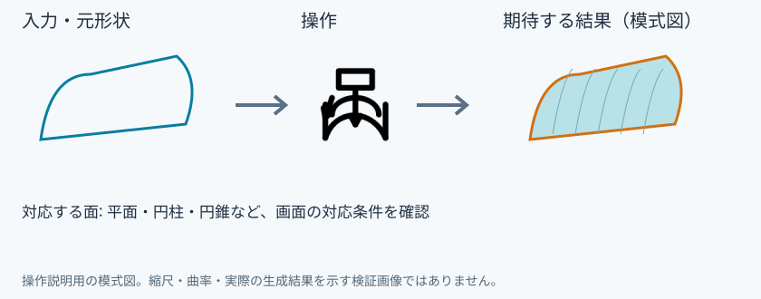
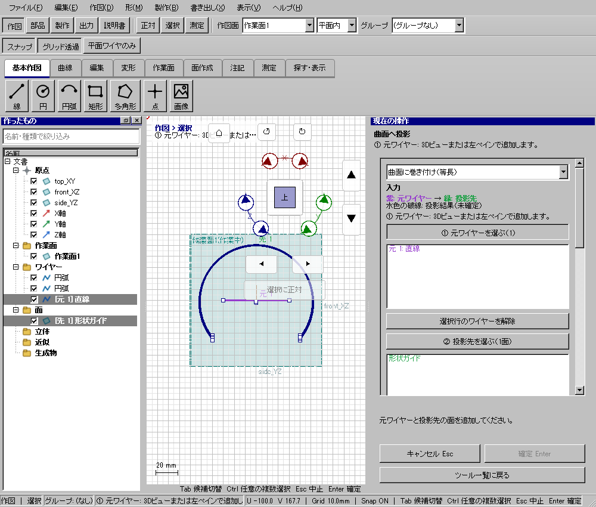

回り込み投影
具体例: 円筒面へ窓の輪郭を巻き付ける

準備
円筒面と平面内の4×6mm窓輪郭を用意する
操作手順
- 巻き付け投影を選ぶ
- 元ワイヤーと巻き付け先の面を追加する
- 開始位置と方向を指定して確定する
設定: 対応する面: 平面・円柱・円錐など、画面の対応条件を確認
結果を確認
面に沿って窓輪郭が配置される。正面から真っすぐ落とす投影とは異なる。
取消・やり直し
ダイアログの取消、またはペインの取消を使います。即時操作には未確定段階がありません。 確定済みの文書変更はCtrl+Z、やり直しはCtrl+Yです。保存・書出し済みのファイルはUndoの対象ではありません。
進めない場合
元ワイヤーと投影先の面を、道具を開始してから指定できます。
対象欄と3Dの強調を照合し、必要な線・面・部品を各役割へ指定します。処理中は計算表示を確認し、取消が可能な処理は取消を使います。
Windows版の操作画面
